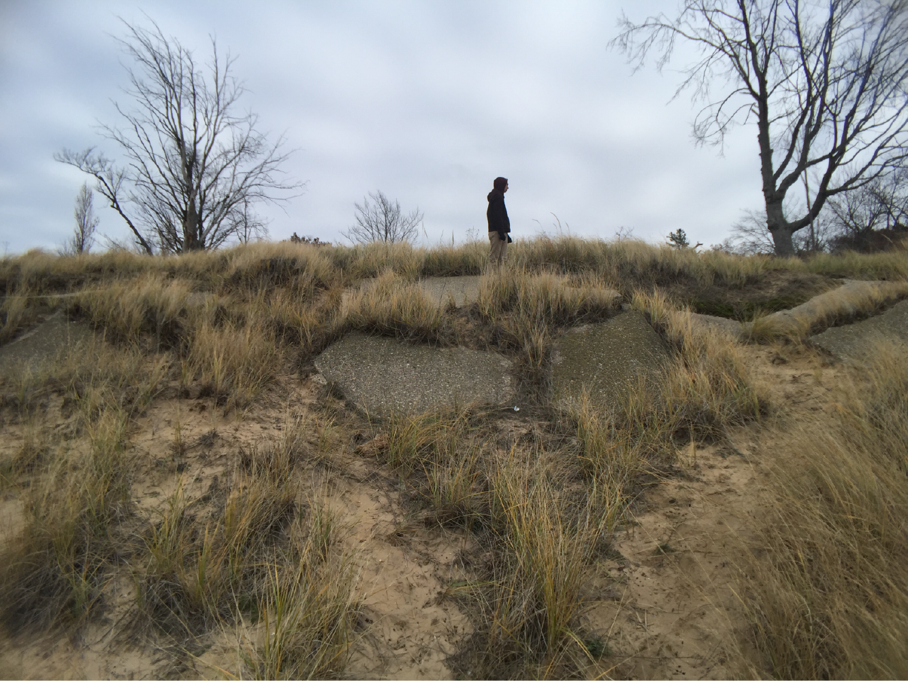
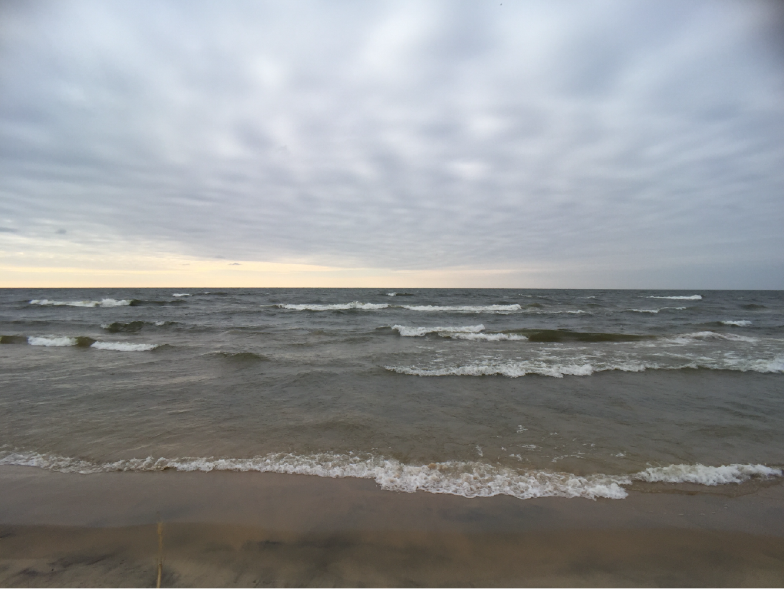

I love filmmaking, but I don't have much time or money to put into it. As a solution, I've started to follow more of a guerrilla filmmaking approach to creating my short films. Basically, I go out to a few locations with nothing more than an iPhone 6 and a vague idea of a feeling and theme that I'd like to explore. I spend about an hour gathering as much footage as I can, then upload the footage to iMovie and try to build some type of narrative.
The final product is a thought provoking, comedic, sometimes psychedelic, cinematic masterpiece. I slap a seemingly unrelated title on each film and post them to my Instagram.
Soundtrack: Beethoven String Quartet No.14 in C-sharp minor, Op 131 (1st Movement) Cast: Jamie Pesch, Evan Pesch, Ron Pesch
Soundtrack: Original soundtrack composed by Evan Pesch Cast: Evan Pesch, Evan Pesch, Evan Pesch, Deer, Future Evan Pesch
 